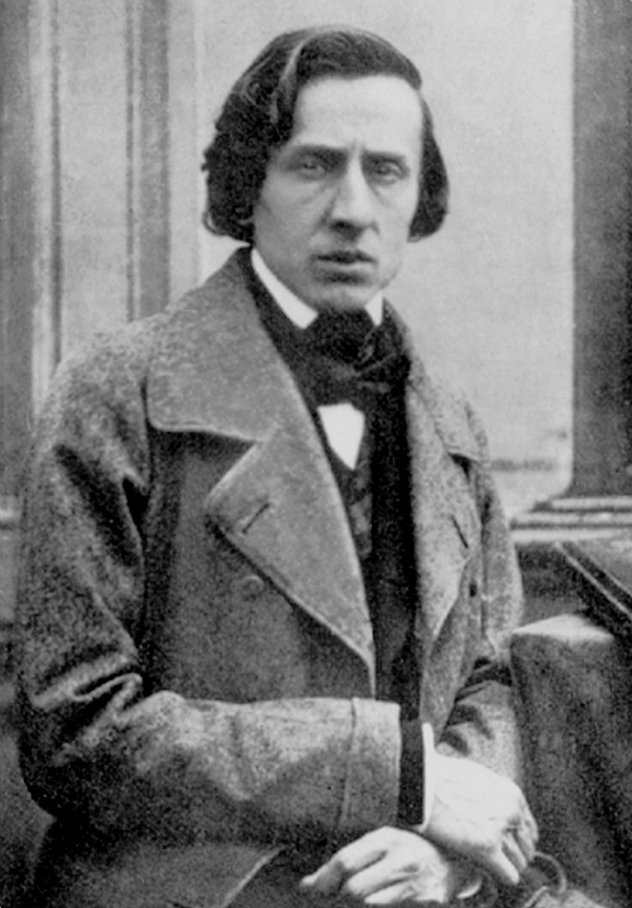
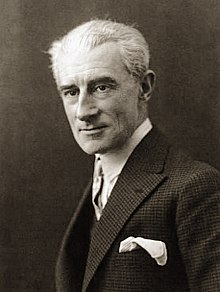

Compositores
He listado algunos de mis compositores favoritos junto a su composición que más me ha gustado en orden cronológico.W. A. Mozart

Wolfgang Amadeus Mozart fue un compositor, pianista, director de orquesta y profesor
del antiguo Arzobispado de Salzburgo
(anteriormente parte del Sacro Imperio Romano Germánico, actualmente parte de Austria),
maestro del Clasicismo,
considerado como uno de los músicos más influyentes y destacados de la historia.
L. V. Beethoven
Ludwig Van Beethoven fue un compositor, director de orquesta, pianista y profesor de piano alemán.
Su legado musical abarca,
cronológicamente, desde el Clasicismo hasta los inicios del Romanticismo. Es considerado
uno de los compositores más importantes de la historia de la música
y su legado ha influido de forma decisiva en la evolución posterior de este arte.
F. Chopin
Frédéric Chopin fue un profesor, compositor y virtuoso pianista polaco,
considerado uno de los más importantes de la historia y
uno de los mayores representantes del Romanticismo musical.
C. Debussy
Achille Claude Debussy fue un compositor francés, uno de los más influyentes de finales del siglo xix
y principios del xx.
Algunos autores lo consideran el primer compositor impresionista, aunque él rechazó categóricamente el término.
M. Ravel
Joseph Maurice Ravel fue un compositor francés del siglo XX. Su obra, frecuentemente vinculada al impresionismo, muestra además un audaz estilo
neoclásico y,
a veces, rasgos del expresionismo, y es el fruto de una compleja herencia y de hallazgos musicales que revolucionaron la música para piano y para orquesta.
A. Berg
Alban Maria Johannes Berg fue alumno de Arnold Schoenberg y perteneció a la Segunda Escuela de Viena. Incursionó como ellos en la atonalidad
y luego en el dodecafonismo,
escribiendo obras vinculadas a la estética expresionista, pero su música tiene además una sonoridad que evoca la tonalidad,
con reminiscencias
del romanticismo, y una inclinación marcadamente dramática.